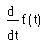
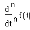
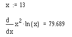

Derivative Operators |
Keystroke: [?]

Returns the first derivative of f(t) with respect to t, and evaluated at the point t.
Keystroke: [Ctrl] [Shift] [/]

Returns the nth derivative of f(t) with respect to t, and evaluated at the point t. The numerical method used is a variation on Ridder's method, which calculates (n + 1)-point divided differences using a variety of step sizes, then uses weighted averages to compute successive approximations in a table. Successive table entries are compared, and the one with the smallest error is returned as the derivative, if the error is below some acceptable level. You can expect the first derivative to be accurate to within 7 or 8 significant digits, provided that the value at which you evaluate the derivative is not too close to a singularity of the function. Accuracy tends to decrease by one significant digit for each increase in the order of the derivative.
